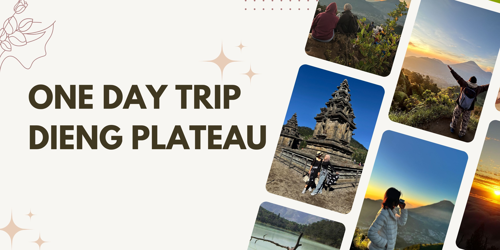

One Day Trip Dieng – Jelajahi Ikon Utama Dieng Tanpa Menginap
Paket wisata Dieng 1 hari ini memudahkan Anda menikmati beragam keindahan Dieng dalam waktu singkat. Seluruh rute dan fasilitas sudah diatur agar Anda bisa mengeksplorasi spot-spot favorit tanpa perlu bermalam. Cocok untuk traveler yang punya jadwal padat tapi tetap ingin merasakan suasana pegunungan Dieng secara maksimal.
Semua kebutuhan perjalanan sudah dipersiapkan, mulai dari kendaraan, layanan makan, tiket masuk wisata, hingga tour guide berpengalaman. Anda tinggal datang ke meeting point, lalu seluruh agenda sudah berjalan sesuai jadwal. Program ini bisa untuk solo traveler, keluarga, maupun grup kecil.
Fasilitas
- Kendaraan: Transportasi nyaman sesuai jumlah peserta
- Layanan makan 2x: Sarapan ringan & makan siang khas Dieng
- Tiket masuk destinasi wisata: Sudah termasuk semua tiket objek wisata sesuai itinerary
- Driver: Pengemudi lokal yang berpengalaman
- Tour guide: Pemandu wisata yang siap membantu selama perjalanan
- BBM: Biaya bahan bakar kendaraan sudah ditanggung
- Parkir: Termasuk seluruh biaya parkir di setiap destinasi
- Tol: Biaya tol untuk akses lebih cepat dan nyaman
- Air mineral: Air minum untuk peserta selama trip
Destinasi
- Bukit Sikunir: Spot sunrise populer dengan pemandangan pegunungan Dieng.
- Telaga Cebong: Danau alami di kaki Bukit Sikunir, suasana asri dan sejuk.
- Kawah Sikidang: Kawah aktif dengan fenomena geothermal unik, mudah diakses.
- Komplek Candi Arjuna: Kompleks candi Hindu bersejarah di area utama Dieng.
- Batu Ratapan Angin: Tempat favorit foto dengan panorama Telaga Warna dan Pengilon.
- Dieng Plateau Theater: Bioskop mini untuk mengenal sejarah dan pesona Dieng.
- Taman Pintu Langit: Taman tematik modern dengan spot foto kekinian di Dieng.
- Sentra Oleh-oleh dan Kuliner Khas: Belanja oleh-oleh serta mencicipi makanan khas Dieng.
Itinerary
| Aktivitas | Deskripsi |
|---|---|
| Penjemputan & persiapan | Meeting point sesuai kota keberangkatan, lalu perjalanan menuju Dieng. |
| Bukit Sikunir | Menikmati panorama dari puncak, terkenal dengan golden sunrise-nya. |
| Telaga Cebong | Singgah sejenak di danau alami, suasana tenang dan udara segar. |
| Kawah Sikidang | Menyaksikan aktivitas geothermal dan melihat kawah aktif secara langsung. |
| Komplek Candi Arjuna | Menyusuri situs candi Hindu kuno dan area wisata utama Dieng. |
| Batu Ratapan Angin | Spot foto dengan pemandangan dua telaga dan pegunungan. |
| Dieng Plateau Theater | Menonton film dokumenter tentang Dieng untuk memperkaya wawasan wisata. |
| Taman Pintu Langit | Taman tematik dengan beragam spot foto menarik dan area santai. |
| Sentra Oleh-oleh dan Kuliner Khas | Belanja oleh-oleh khas Dieng dan menikmati sajian lokal sebelum kembali. |
| Pengantaran | Kembali ke meeting point kota asal, tour selesai. |
Panduan Perjalanan
Suhu di Dieng cenderung dingin, terutama pagi hari. Disarankan membawa jaket, alas kaki nyaman, dan perlengkapan pribadi seperlunya. Semua destinasi bisa diakses tanpa trekking berat, cocok untuk semua usia. Jika ada kebutuhan khusus, silakan informasikan saat reservasi.
Meeting Point (Mepo)
Meeting point bisa dari Wonosobo, Jogja, Purwokerto, Semarang, Solo, atau area lain di Jawa Tengah dan DIY. Penjemputan dapat dilakukan di bandara, stasiun, hotel, atau lokasi lain yang disepakati bersama saat booking.
Pertanyaan yang Sering Ditanyakan
Bisa trip privat?
Bisa, semua paket bisa dibuat privat sesuai kebutuhan peserta.
Bisa mulai dari Jogja, Semarang, atau Purwokerto?
Meeting point bisa diatur dari kota lain sesuai permintaan, dengan penyesuaian biaya dan jadwal.
Destinasi apa saja yang dikunjungi?
Bukit Sikunir, Telaga Cebong, Kawah Sikidang, Komplek Candi Arjuna, Batu Ratapan Angin, Dieng Plateau Theater, Taman Pintu Langit, dan sentra oleh-oleh serta kuliner khas.
Fasilitas apa saja yang didapat?
Kendaraan, layanan makan 2x, tiket masuk destinasi wisata, driver, tour guide, BBM, parkir, tol, dan air mineral.
Termasuk makan dan penginapan?
Paket sudah termasuk makan 2x, belum termasuk penginapan karena program hanya satu hari.
Bagaimana jika cuaca kurang mendukung?
Perjalanan tetap berjalan dengan penyesuaian rute sesuai kondisi, keamanan peserta menjadi prioritas.
Minimal peserta berapa?
Tidak ada minimal peserta untuk paket privat, open trip mengikuti jadwal yang tersedia.